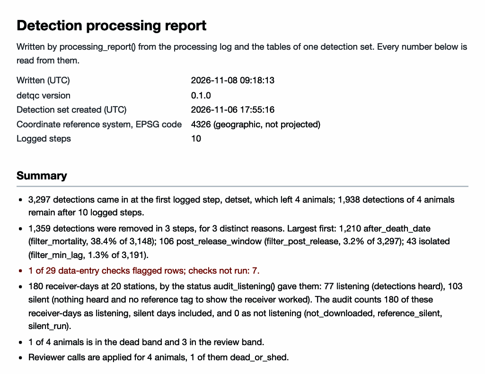
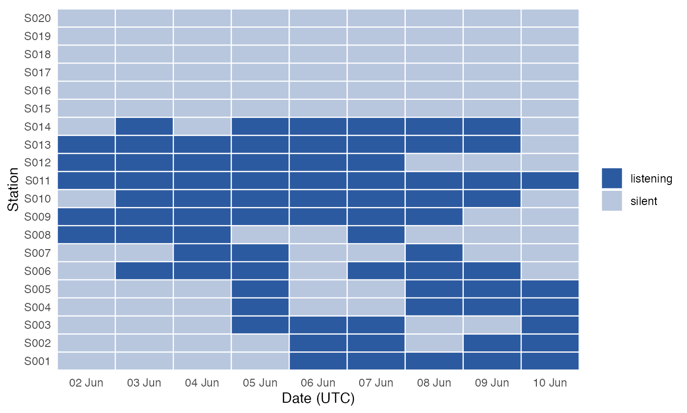

This page converts a detection set into the inputs of the detfield R package, the glatos and actel R packages, and ATO (the Animal Tracking Object, a set of R classes from the trackyverse project, https://ato.trackyverse.org). It also saves the set in files other software reads, writes the processing report, and brings work done in glatos or actel back into detqc. The code skips the glatos, actel and arrow steps when their package is not installed. detfield has its own hand-offs to other packages (Hand the positions on).

Figure 1. The top of the processing report that the code at the end of this page writes.
A detection set to export
The example is stoney_clean, the Stoney Lake study
included with the package as a detection set already read, checked,
filtered and cut for mortality; Base
processing and Mortality
filtering show how such a set is made. Use your own set in its
place.
library(detqc)
# Load the Stoney Lake study, read, checked and filtered
dets <- stoney_clean
# Print the set: its tables, its log and its checks
dets
#> <detset> 1,938 detections of 4 animals (4 transmitters), heard on 14 of 20
#> receivers at 14 of 20 stations
#> 2024-06-02 to 2024-06-10 (UTC); 20 deployments; 4 animal rows; 180 of 180
#> receiver-days listening (audited)
#> log: 9 steps (detset, calibrate_sensors, check_detset, audit_listening,
#> filter_duplicates, filter_post_release, filter_min_lag,
#> apply_mortality_calls, filter_mortality)
#> mortality calls: 4 animalsThe code writes its files to out_dir, a temporary folder
here. In your copy of the script, set it to a folder beside your
data.
# Change to a folder beside your data, such as "C:/telemetry/2024/processed".
out_dir <- tempdir()Hand off to detfield
as_detfield_input() returns the three inputs of
detfield’s bin_detections(): the
detections, the receiver listening days and the programmed transmission
delays of each tag. audit_listening() ran on
stoney_clean before the filters and named every receiver of
the Stoney array in known_listening. With your own data,
name only the receivers your field records or the network’s receiver
file confirm: the silent days of a named receiver count as
listening.
# Count receiver-days by status, and give the dates the audit covers
table(dets$listening$status)
#>
#> listening silent
#> 77 103
range(dets$listening$date)
#> [1] "2024-06-02" "2024-06-10"A listening day is a full day in the water on which the
receiver heard a transmitter, and a partial day is a
deployment or recovery day. A silent day is a full day with
no detection and no reference tag to show the receiver worked; it counts
as listening. With reference tags in the water, given in
reference_tags, a silent day on which a receiver should
have heard one is read as not listening. Given the receivers’ own logs
in logs, the audit also finds the days a receiver was
off or deaf, which
as_detfield_input() passes as not listening (Receiver logs).
as_detfield_input() then returns the three tables.
# Make the three inputs of detfield::bin_detections()
detfield_input <- as_detfield_input(dets)
names(detfield_input)
#> [1] "detections" "listening" "tag_delay"
# Show the delays of each transmitter, from the tag sheet
detfield_input$tag_delay
#> transmitter animal_id min_delay max_delay
#> 1 A69-9002-61002 ST-02 120 180
#> 2 A69-1601-61004 ST-04 120 180
#> 3 A69-9002-61003 ST-03 120 180
#> 4 A69-1601-61001 ST-01 120 180
# List detected transmitters with no delays: none here
setdiff(unique(dets$detections$transmitter),
detfield_input$tag_delay$transmitter)
#> character(0)tag_delay gives the delays from the tag specification
sheet, one row per transmitter. bin_detections() stops on a
detected transmitter with no delays, so add its delays to the sheet, or
leave its animal out, before you go on.
The listening table has one row per receiver and day. The code below adds each receiver’s station and counts the days by status.
# Take the receiver-day table detfield reads, with each receiver's station
listening_days <- detfield_input$listening$days
rx_row <- match(listening_days$receiver_serial, dets$deployments$receiver_serial)
listening_days$station <- dets$deployments$station_id[rx_row]
table(listening_days$status)
#>
#> listening silent
#> 77 103Drawn by station and day (Figure 2), the table shows the six stations that heard none of the four walleye on any day, S015 to S020.
# Draw one tile per station and day, coloured by status
ggplot2::ggplot(listening_days, ggplot2::aes(as.Date(date), station,
fill = status)) +
ggplot2::geom_tile(colour = "white", linewidth = 0.4) +
ggplot2::scale_fill_manual(values = c(listening = "#2C5AA0",
silent = "#B8C7DE",
partial = "#E69F00"), name = NULL) +
ggplot2::scale_x_date(date_labels = "%d %b", date_breaks = "1 day",
expand = c(0, 0)) +
ggplot2::labs(x = "Date (UTC)", y = "Station") +
theme_positionr() +
ggplot2::theme(panel.grid = ggplot2::element_blank())
Figure 2. The listening table
as_detfield_input() returns for stoney_clean,
one tile per station and day (180 receiver-days).
detfield’s article Position fish from a cleaned detection set takes this set on.
glatos
to_glatos() returns the detections as a
glatos_detections data frame, with the columns the
glatos filters and summaries read.
glatos need not be installed to make it.
# Convert the detections to a glatos_detections data frame
glatos_dets <- to_glatos(dets)
class(glatos_dets)
#> [1] "glatos_detections" "data.frame"
head(glatos_dets[, c("animal_id", "detection_timestamp_utc", "transmitter_id",
"receiver_sn", "glatos_array", "station")], 3)
#> animal_id detection_timestamp_utc transmitter_id receiver_sn glatos_array
#> 1 ST-04 2024-06-02 21:31:55 61004 R011 STN
#> 2 ST-02 2024-06-02 21:32:07 61002 R011 STN
#> 3 ST-02 2024-06-02 21:34:08 61002 R011 STN
#> station
#> 1 S011
#> 2 S011
#> 3 S011glatos groups detections by
glatos_array unless told otherwise, and the Stoney files
put every station in one array, STN. Give
location_col = "station" to the glatos
functions to work by station, as below, or fill
glatos_array with your own array codes.
if (requireNamespace("glatos", quietly = TRUE)) {
# Compute detection events by station with glatos
events <- glatos::detection_events(glatos_dets, location_col = "station")
head(events[, c("animal_id", "location", "first_detection", "last_detection",
"num_detections")], 3)
}
#> The event filter distilled 1938 detections down to 103 distinct detection
#> events.
#> animal_id location first_detection last_detection num_detections
#> 1 ST-01 S013 2024-06-02 22:26:02 2024-06-03 11:56:20 77
#> 2 ST-01 S012 2024-06-03 12:49:18 2024-06-03 13:33:52 5
#> 3 ST-01 S011 2024-06-03 14:08:09 2024-06-03 20:33:08 36actel
to_actel() returns the four tables
actel::preload() reads: biometrics, spatial, deployments
and detections. actel works in the local time zone of
the study area. Name that zone once, as tz below, and give
it to both functions: to_actel() writes the release and
deployment times in it, and preload() converts the UTC
detections to it, so every table reads in one zone.
# Make the four actel tables, in the time zone of the study area
tz <- "America/Toronto"
actel_input <- to_actel(dets, tz = tz)
# Count rows per table
vapply(actel_input, nrow, 1L)
#> biometrics spatial deployments detections
#> 4 21 20 1938
head(actel_input$biometrics)
#> Release.date Signal Code.space Group Release.site animal_id
#> 1 2024-06-02 11:30:00 61002 A69-9002 walleye R1 ST-02
#> 2 2024-06-02 11:30:00 61004 A69-1601 walleye R1 ST-04
#> 3 2024-06-02 11:30:00 61003 A69-9002 walleye R1 ST-03
#> 4 2024-06-02 11:30:00 61001 A69-1601 walleye R1 ST-01
# Show the rows to_actel() left out, and those actel will drop
attr(actel_input, "dropped")
#> no_station unreadable_code
#> 0 0
attr(actel_input, "actel_drops")
#> not_in_biometrics before_release
#> 0 0No detection was dropped here. to_actel() counts each
change actel needs in an attribute:
- A detection with no station, or with a code that cannot be read, is
left out (
dropped). -
actel::preload()drops the detections of transmitters not in the biometrics and those before release (actel_drops, counted ahead of time). -
actel names a receiver by a whole number; the
lookup is in
attr(actel_input, "receivers"). - In actel, an array is a group of stations the
analysis treats as one place, in the order an animal meets them along a
river. A lake has no such order, so
to_actel()puts every station in one array,A1. For a river, giveto_actel()arrays, the array code of each station named bystation_id, and givepreload()the matchingdot, such as"A1--A2--A3".
With actel installed, preload() takes
the four tables and read_detset_from() brings the result
back.
# Run only when the actel package is installed
if (requireNamespace("actel", quietly = TRUE)) {
# Load the four tables with actel
preloaded <- do.call(actel::preload, c(actel_input, list(tz = tz)))
# Bring the actel result back as a detection set
from_actel <- read_detset_from(preloaded,
receivers = attr(actel_input, "receivers"))
from_actel
}
#> M: Preloaded Release dates are already in POSIX format. Skipping timestamp
#> format checks.
#> Warning: Long group names detected. To improve graphic rendering, consider
#> keeping group names under six characters.
#> M: Number of target tags: 4.
#> M: Preloaded deployment times are already in POSIX format. Skipping
#> timestamp format checks.
#> M: Matching detections with deployment periods.
#> M: Number of ALS: 20 (of which 6 had no detections)
#> Warning: No detections were found for receiver(s) 15, 16, 17, 18, 19, 20.
#> M: Data time range: 2024-06-02 17:31:55 to 2024-06-10 07:58:21
#> (America/Toronto).
#> M: Extracting relevant detections...
#> M: Data successfully imported!
#> <detset> 1,938 detections of 4 animals (4 transmitters), heard on 14 of 20
#> receivers at 14 of 20 stations
#> 2024-06-02 to 2024-06-10 (UTC); 20 deployments; 4 animal rows; 220
#> receiver-days deployed (listening not audited)
#> log: 2 steps (detset, read_detset_from)actel warns that the group name walleye
is longer than six characters and that six receivers heard none of the
four walleye. read_detset_from() brings back the
detections, the deployments and each animal’s release; the other animal
columns stay in dets.
ATO
to_ato() returns the four ATO tables det,
dep, tag and ani, each with every
column of ATO’s template. Build the ATO object from them with ATO’s
make_det(), make_dep(),
make_tag(), make_ani() and
init_ato().
# Make the four ATO tables
ato <- to_ato(dets)
# Count rows per table, and list the columns of the tag table
vapply(ato, nrow, 1L)
#> det dep tag ani
#> 1938 20 4 4
names(ato$tag)
#> [1] "manufacturer" "model" "power_level"
#> [4] "ping_rate" "ping_variation" "serial"
#> [7] "transmitter" "activation_datetime" "battery_life"
#> [10] "sensor_type" "sensor_unit" "animal"
#> [13] "valid" "tz" "sensor_slope"
#> [16] "sensor_intercept"Files other software reads
write_detset() saves the whole detection set, with its
log and checks. An RDS file keeps it exactly for R. A folder of Parquet
files, written with the arrow package, is read by
Python, DuckDB and most other tools. read_detset() reads
either back.
# Write a folder of Parquet files, when arrow is installed
set_path <- file.path(out_dir, "my_detset")
if (requireNamespace("arrow", quietly = TRUE)) {
write_detset(dets, set_path, format = "parquet", overwrite = TRUE)
list.files(set_path)
}
#> [1] "animals.parquet" "deployments.parquet" "detections.parquet"
#> [4] "listening.parquet" "log.parquet" "meta.json"
#> [7] "mortality.parquet" "other.rds"
# Write one RDS file, and read it back to confirm the detections
write_detset(dets, paste0(set_path, ".rds"), overwrite = TRUE)
nrow(read_detset(paste0(set_path, ".rds"))$detections)
#> [1] 1938For a spreadsheet, write one table. Times are UTC; write them with the zone in the text, so that no program reads them as local time:
# Write the times as text with the UTC zone marked
det_table <- dets$detections
det_table$datetime <- format(det_table$datetime, "%Y-%m-%dT%H:%M:%SZ")
write.csv(det_table, file.path(out_dir, "detections.csv"), row.names = FALSE)
head(det_table$datetime, 3)
#> [1] "2024-06-02T21:31:55Z" "2024-06-02T21:32:07Z" "2024-06-02T21:34:08Z"The processing report
processing_report() writes one HTML file: the files
read, every logged step with its counts before and after, the checks,
the detections removed by reason, the mortality bands and calls, and the
figures. It needs no internet and opens in any browser, so hand it on
with the exported tables.
Given the mortality bands from detect_mortality(), the
report adds them to its summary. The bands come from the set before the
mortality cut, which is included as example_mortality, with
the rules scaled to this nine-day study as on the Get started page.
# Build the set before the mortality cut from example_mortality
before_cut <- detset(example_mortality$detections,
example_mortality$deployments, example_mortality$animals)
# Scale the mortality rules to nine days and band the animals
mort_rules <- mortality_rules(min_days = 3, min_calendar_days = 3,
min_flat_days = 2, within_days = 2)
bands <- detect_mortality(before_cut, rules = mort_rules)
bands$bands[, c("animal_id", "band", "deciding_rule")]
#> animal_id band deciding_rule
#> 1 ST-02 dead terminal_run
#> 2 ST-01 review terminal_run_stray
#> 3 ST-03 review record_end
#> 4 ST-04 review record_endGive the outline of the water body as
control = list(outline = outline) to draw it under the
report’s map of the receivers. Here the outline is made from the Stoney
Lake depth raster included with the package.
# Locate the example files included with the package
extdata_dir <- system.file("extdata", package = "detqc")
in_file <- function(name) file.path(extdata_dir, name)
# Read the depth raster and make the lake outline from its water cells
lake <- terra::rast(in_file("stoney_depth.tif"))
outline <- sf::st_as_sf(terra::as.polygons(terra::ifel(is.na(lake), NA, 1)))
# Write the report file, and open it in an interactive session
report <- processing_report(dets, file.path(out_dir, "processing_report.html"),
bands = bands,
control = list(outline = outline))
basename(report)
#> [1] "processing_report.html"
if (interactive()) utils::browseURL(report)Figure 1, at the top of the page, is the top of that report.
The site keeps the report of the Get started page: the processing report, with the four review cards.
Back into detqc
read_detset_from() builds a detection set from
glatos detections or an actel preload,
so work started in either can be checked and logged here. Without a
receiver table it infers the deployments from the detections, 14 here
against 20 deployed, and the log says so. An inferred deployment cannot
show when a receiver listened and heard nothing. Give the
glatos receiver table as receivers to keep
every deployment.
# Rebuild a detection set from the glatos detections alone
from_glatos <- read_detset_from(glatos_dets)
from_glatos
#> <detset> 1,938 detections of 4 animals (4 transmitters), heard on 14 of 14
#> receivers at 14 of 14 stations
#> 2024-06-02 to 2024-06-10 (UTC); 14 deployments; 4 animal rows; 75
#> receiver-days deployed (listening not audited)
#> log: 2 steps (detset, read_detset_from)
# Show the log record that says the deployments were inferred
detset_log(from_glatos)$reason[2]
#> [1] "read from glatos detections: 1,938 detections, 14 deployments
#> (inferred from the detections), 4 animal rows"
# Rebuild with the glatos receiver table, which keeps every deployment
if (requireNamespace("glatos", quietly = TRUE)) {
receivers <- glatos::read_glatos_receivers(in_file("stoney_receivers.csv"))
from_glatos <- read_detset_from(glatos_dets, receivers = receivers)
from_glatos
}
#> <detset> 1,938 detections of 4 animals (4 transmitters), heard on 14 of 20
#> receivers at 14 of 20 stations
#> 2024-06-02 to 2024-06-10 (UTC); 20 deployments; 4 animal rows; 220
#> receiver-days deployed (listening not audited)
#> log: 2 steps (detset, read_detset_from)Next
- Position fish from a cleaned detection set, in detfield: position the animals of the exported set.
-
?to_actel,?to_glatosand?to_atogive every column each conversion writes.
The code of this page is also a plain R script:
system.file("scripts", "exporting.R", package = "detqc").
Copy it, and change out_dir and the file paths to your
own.